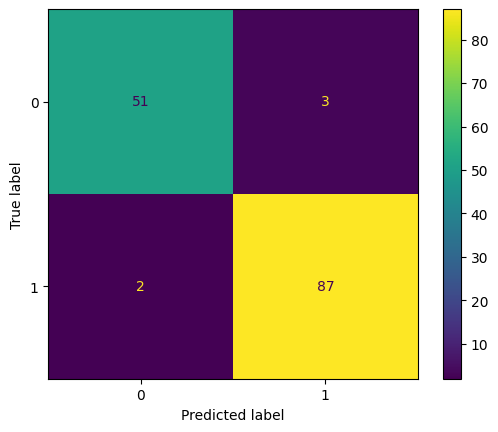

from sklearn.metrics import precision_score
y_true = [0, 1, 1, 1, 0, 1]
y_pred = [0, 1, 0, 1, 0, 1]
precision_score(y_true, y_pred)1.0Precision is a classification metric that measures the accuracy of the positive predictions made by a model. It is defined as the ratio of true positives to the sum of true positives and false positives.
\displaystyle \text{Precision} \ =\ \frac{\text{True Positives}}{\text{True Positives + False Positives}}
Precision is particularly useful in situations where the cost of false positives is high. For example, in medical diagnoses, where a false positive might lead to unnecessary treatments, precision becomes a crucial metric.
\displaystyle \text{Precision} \ =\ \frac{\text{TP}}{\text{TP + FP}}
Where, TP = True Positives FP = False Positives
precision_score is the function in scikit-learn used to calculate precision.
The parameters are as follows: - y_true: Ground truth (correct) labels. - y_pred: Predicted lab as returned by a classifier. - labels (None): The set of labels to include when average is not None. - pos_label (1): The label of the positive class. - average (‘binary’): The averaging strategy for multiclass settings. - sample_weight (None): Sample weights.
from sklearn.metrics import precision_score
y_true = [0, 1, 1, 1, 0, 1]
y_pred = [0, 1, 0, 1, 0, 1]
precision_score(y_true, y_pred)1.0We are going to calculate the precision of a logistic regression model on the breast_cancer dataset using sklearn.
from sklearn.datasets import load_breast_cancer
from sklearn.model_selection import train_test_split
from sklearn.linear_model import LogisticRegression
X, y = load_breast_cancer(return_X_y=True, as_frame=True)
X_train, X_test, y_train, y_test = train_test_split(X, y, test_size=0.25, random_state=42)
model = LogisticRegression()
model.fit(X_train, y_train)
y_pred = model.predict(X_test)
precision_score(y_test, y_pred)/usr/local/lib/python3.10/dist-packages/sklearn/linear_model/_logistic.py:458: ConvergenceWarning: lbfgs failed to converge (status=1):
STOP: TOTAL NO. of ITERATIONS REACHED LIMIT.
Increase the number of iterations (max_iter) or scale the data as shown in:
https://scikit-learn.org/stable/modules/preprocessing.html
Please also refer to the documentation for alternative solver options:
https://scikit-learn.org/stable/modules/linear_model.html#logistic-regression
n_iter_i = _check_optimize_result(0.9666666666666667from sklearn.metrics import ConfusionMatrixDisplay
ConfusionMatrixDisplay.from_estimator(model, X_test, y_test)<sklearn.metrics._plot.confusion_matrix.ConfusionMatrixDisplay at 0x7e3d61cdd180>
In the above matrix, we can see that: TP = 87, TN = 51, FP = 3, FN = 2
\begin{aligned} {\displaystyle \text{Precision}} & ={\displaystyle \frac{\text{TP}}{\text{TP} + \text{FP}}}\\ & \\ & {\displaystyle =\frac{\text{87}}{\text{87 + 3}}}\\ & \\ & {\displaystyle =\ \frac{\text{87}}{\text{90}}}\\ & \\ & {\displaystyle =\ 0.9666} \end{aligned}